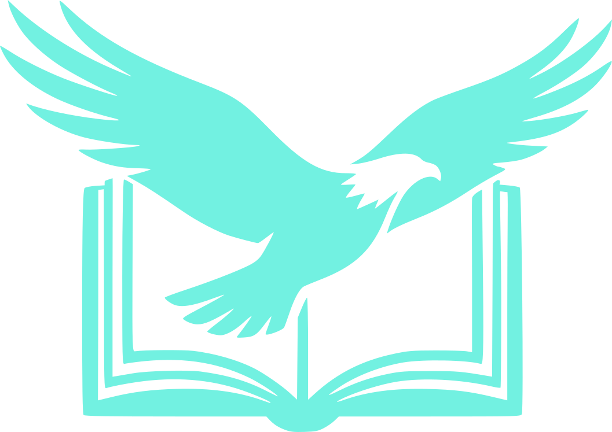

Wingspan Bird DictionaryFind the local name of a bird
Search by Scientific or English names, including partial input (fuzzy search). The three closest results (Levenshtein distance) of either scientific or English name are displayed with a translation and an image from Wikipedia when available. If the bird exists in the Wingspan universe, a link to the corresponding card on wingsearch is provided.
scientific · english · fuzzy
Your wildlife preserve (pinned birds)
Pin birds to keep them within reach.